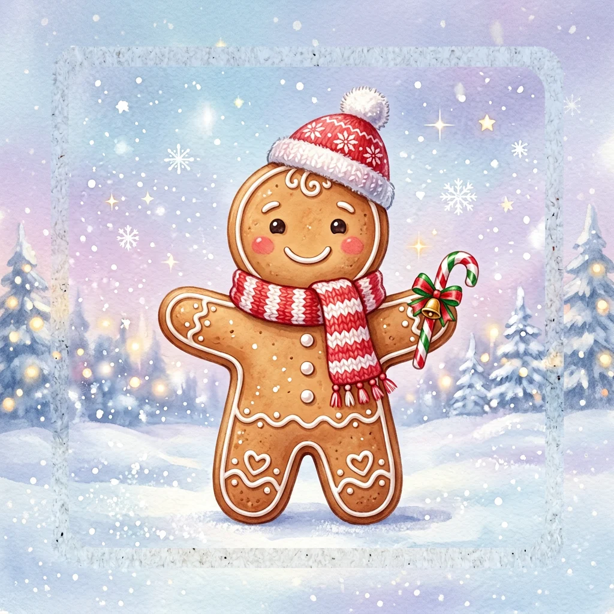
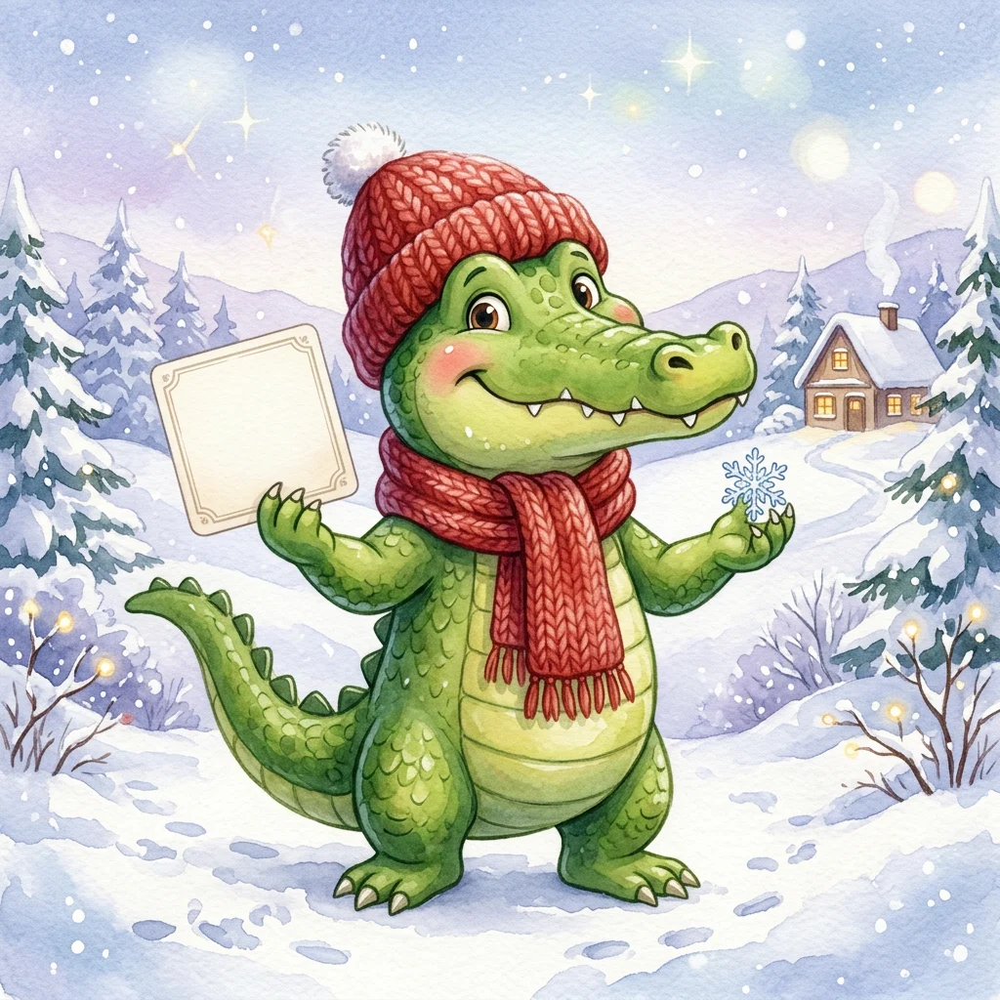

01НА ПАМЯТЬ
🎁
⛄
🎄
✦Мемо: Новый год
Выбирай иллюстрированную или фото-колоду, включай вопросы с бонусами или новогодние факты.
Пять новогодних игр для класса: ищем пары, загадываем персонажей, объясняем слова, отвечаем на зимние вопросы и разгадываем кроссворды.
Выбрать игру ↓Правила простые — веселья
хватит на весь праздник!
Выбирай иллюстрированную или фото-колоду, включай вопросы с бонусами или новогодние факты.

Два режима: у доски спиной к экрану или круг, где каждый получает секретную карточку на телефоне.

100 карточек · 6 цветных фишек · поле и песочные часы. Объясняй слово — двигайся к финишу!
70 зимних вопросов: традиции, сказки, Дед Мороз и новогодние загадки.
Пять зимних сеток — от лёгкой разминки до экспертного уровня.
Русское и зарубежное караоке, поп-хиты и рождественская классика для всей компании.
Игры уже готовы: просто выберите подходящую, соберите ребят и нажмите «Играть». Никаких распечаток и реквизита — только хорошее настроение!